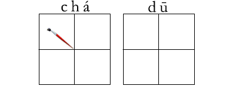

2016-12-22阅读（12,598）


日前，媒体报道了一系列空中鸟瞰福建侨乡安溪县的图片。安溪县，古称清溪，隶属泉州市。安溪县是“国家级园林县城”，全县拥有各级文物保护单位88处，其中以清水岩、文庙、城隍庙最为著名。安溪县以茶业闻名全中国，号称中国茶都，是中国乌龙茶（名茶）之乡、世界名茶——铁观音发源地，位居中国重点产茶县第一位。
新词速递words
鸟瞰 niǎo kàn
侨乡 qiáo xiāng
隶属 lì shǔ
园林 yuán lín
文物 wén wù
清水岩 qīng shuǐ yán
文庙 wén miào
城隍庙 chéng huáng miào
茶业 chá yè
乌龙茶 wū lóng chá
铁观音 tiě guān yīn
中国各地茶叶一览
1. 西湖龙井
有着“天堂瑰宝”美誉的西湖龙井，是中国绿茶品种之中的王者，一般生长在杭州市西湖周围的群山之中。这种茶叶名字的由来，据说是乾隆皇帝见到太后喝过茶后心情非常高兴，而将这种茶封为御茶，顾而得名。这种龙井茶外形比较坚挺直立，表面光滑，绿中带黄，用水沏的时候，颜色为杏绿色，茶香味十分浓郁。
2. 洞庭碧螺春
碧螺春有着一千多年的历史，产自苏州吴中区。唐朝时期就被作为进宫的贡茶，因为这种茶叶外形卷曲如螺，又是产在春天，所以称为“碧螺春”。此茶喝起来口感清甜，茶香味儿十足。
3. 信阳毛尖
在唐代茶圣陆羽的《茶经》中，就曾把信阳列为全国八大产茶区之一，这种茶叶外形既圆又细，叶的底部非常嫩绿，一般都是一芽一叶或一芽二叶。
4. 安溪铁观音
安溪是中国乌龙茶的主产区，种茶历史悠久，唐代已有茶叶出产。安溪境内雨量充沛，气候温和，山峦重叠，林木繁多，终年云雾缭绕，山青水秀，适宜于茶树生长，而且经过历代茶人的辛勤劳动，选育繁殖了一系列茶树良种，目前境内保存的良种有60多个，铁观音、黄旦、本山、毛蟹、大叶乌龙、梅占等都属于全国知名良种，因此安溪有“茶树良种宝库”之称。在众多的茶树良种中，品质最优秀、知名度最高的要数“铁观音”了。
5. 黄山毛峰
黄山毛峰茶产于安徽省太平县以南，歙(shè)县以北的黄山。黄山是我国景色奇绝的自然风景区。那里常年云雾弥漫，云多时能笼罩全山区，山峰露出云上，像是若干岛屿，故称云海。黄山的松或倒悬，或惬卧，树形奇特。黄山的岩峰都是由奇、险、深幽的山岩聚集而成。
6. 祁门红茶
美国韦氏大辞典，“祁门红茶”记录着祁门红茶的原产地——中国安徽省祁门县。创始年：祁门产茶创制于光绪年（公元1875年），已有百余年的生产历史，可追溯到唐朝，茶圣陆羽在《茶经》中留下：“湖州上，常州次，歙州下” 的记载，当时的祁门就隶属歙州。
7. 庐山云雾
产于江西庐山。号称“匡庐秀甲天下”的庐山，北临长江，南傍鄱阳湖，气候温和，山水秀美十分适宜茶树生长。 庐山云雾芽肥毫显，条索秀丽，香浓味甘，汤色清澈，是绿茶中的精品。
8. 云南普洱
产于云南西双版纳等地，因自古以来即在普洱集散，因而得名。普洱茶是采用绿茶或黑茶经蒸压而成的各种云南紧压茶的总称，包括沱茶、饼茶、方茶、紧茶等。